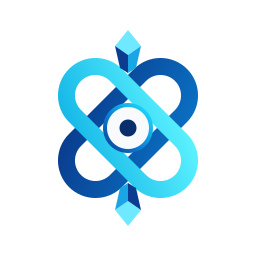

Reshape AETHER from your phone. Pick what to change, and it ships through Claude Code — edits the app, pushes, redeploys. Tap Load latest build when it lands.
Photograph your workpapers. Catch the footing errors, broken tie-outs, date mismatches and flawed logic a sharp reviewer would flag — before they do.